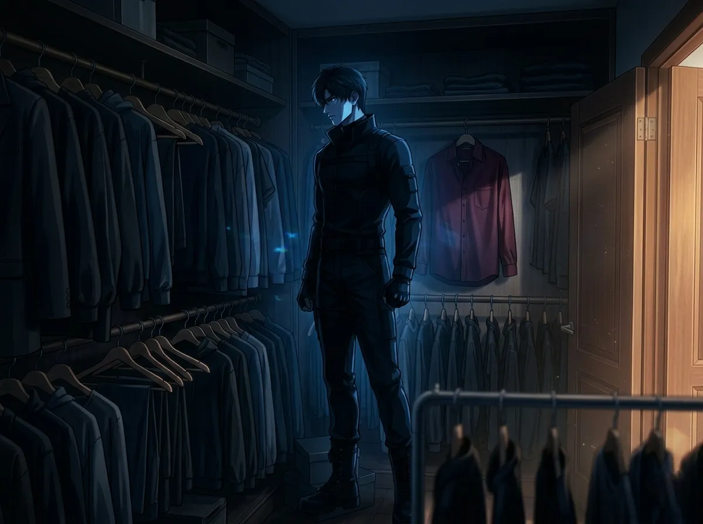
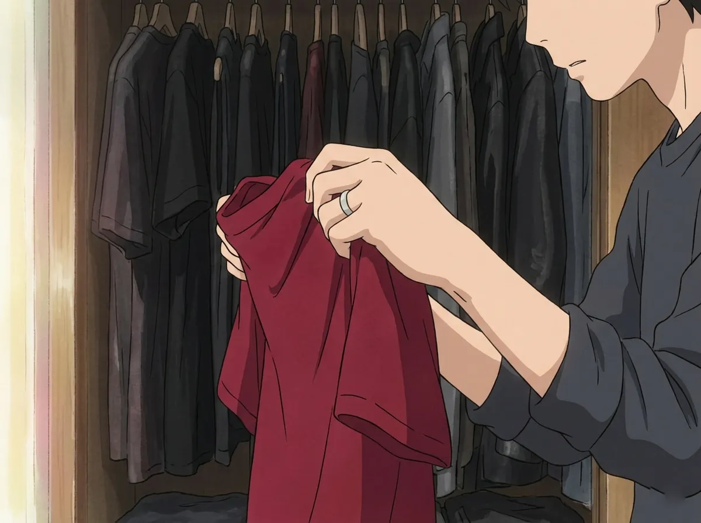
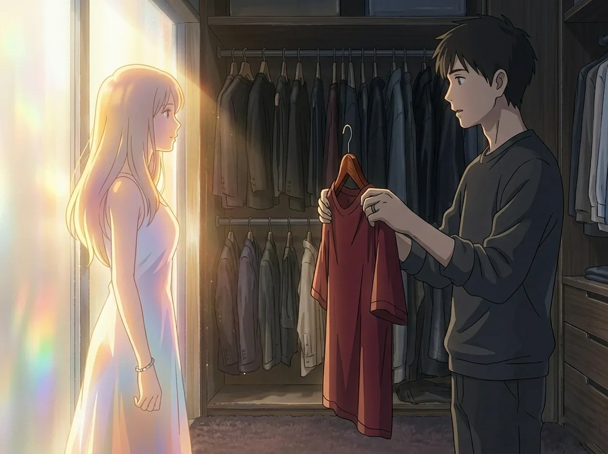
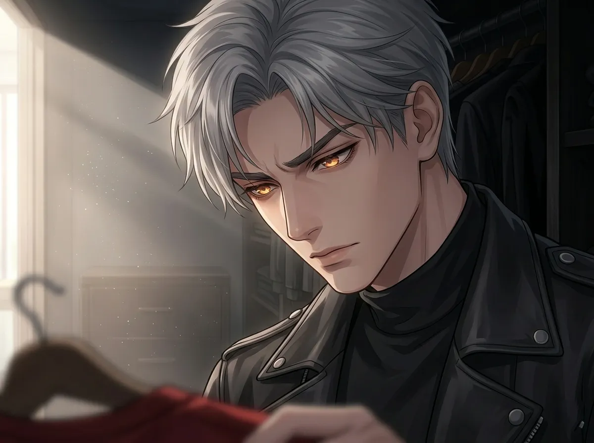
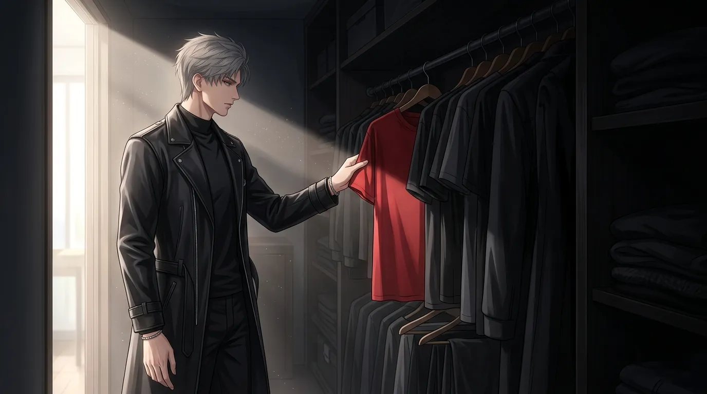

The color he wears. The color he hides.
He wears black every day.
Black shirt. Black coat. Black pants. Black shoes. Black everything.
People notice. Of course they notice. They ask — sometimes out loud, sometimes with their eyes. Why always black? Isn't it boring? Isn't it too dark? Don't you ever want to wear something else?
He never answers. Not because he's being mysterious. Because the answer is too simple, and too complicated, all at once.
He wears black because black doesn't give anything away.
This is the story of that choice. And the one time he almost made a different one.

Black is the absence of color. The absence of light. The absence of information.
When you wear black, you are telling the world nothing. You are a silhouette. A shape. A person with no visible edges.
Sylus likes this. He likes that people can't read him. Can't guess what he's thinking. Can't see the cracks.
Black is armor. Not the kind that deflects bullets — the kind that deflects questions. The kind that says: You don't get to know me. Not from the outside. Not from what I wear. Not from anything I show you.
He chose black a long time ago. He doesn't remember when. He just remembers that it felt right. It felt safe. It felt like hiding in plain sight.
Black hides everything. Dirt. Sweat. Blood. Emotion. Exhaustion. The things he doesn't want anyone to see.
He has been tired for years. He has been hurt. He has been broken. No one knows. Because black doesn't show the cracks.
It is the most honest lie he has ever told. He is not fine. But he looks fine. Because black makes everything look the same.

There was a day. One day. He doesn't remember when. He doesn't remember why.
He was standing in front of his closet. Black. Everything black. And his hand reached for something else. A dark red shirt. Deep. Rich. Almost black, but not quite.
He picked it up. He looked at it. He held it for a long time.
He put it back.
He didn't know why he reached for it. He didn't know why he hesitated. He didn't know why he put it back.
But he remembered that moment. The feeling of almost choosing something else. Almost letting a color in.
He almost chose red that day. Red is the color of blood. Of power. Of anger. Of passion. Of everything he feels but doesn't show.
He put it back because red would have said something. Red would have been a question. Red would have been a crack in the armor.
He wasn't ready. He isn't ready. He may never be ready.
But he remembers the moment. The weight of the red shirt in his hands. The way it felt like a choice he could have made. The way it felt like a door he could have opened.

And then she arrived.
She was color. Not one color. Many. The gold of her hair in sunlight. The blue of the sky behind her. The pink of her cheeks when she laughed. The white of her shirt. The gray of her eyes.
He noticed. He didn't want to notice. But he did.
He noticed because she was the only color in his black world. The only thing that didn't disappear into the shadows. The only thing that was real enough to see.
He didn't tell her. He couldn't tell her. How do you tell someone that they are the first color you've seen in years?
He didn't know he had stopped seeing color. He thought the world was gray. He thought everyone saw the world in shades of black and white and nothing.
Then she appeared. And suddenly there was gold. And blue. And pink. And everything he had forgotten existed.
He didn't say anything. He never says anything. But he saw. He saw every color she brought with her. And he remembered what it felt like to see the world in full.

He knows the color of her eyes.
He has never said it out loud. He doesn't know why. Maybe because naming it would make it real. Maybe because naming it would give it power.
Maybe because he is afraid that if he names it, he will lose it.
He knows the color. He has memorized it. It is the only color he carries with him. The only color he doesn't wear.
He wears black to hide. He keeps her color to remember.
He has never said it out loud. But he has painted it in his mind. Over and over. In the dark. When no one is watching.
It is the color of her eyes. It is the only color that matters.
He wears black to disappear. He keeps her color to remind himself that he is still here. That there is still something worth seeing.

One morning, he opened his closet.
Black. Everything black. The same as always.
His hand moved. Not toward the black shirts. Toward something else. Something he had put in the back. A dark red shirt. The one he had almost worn that day.
He touched it. He felt the fabric. He thought about what it would look like. What it would feel like. What people would think.
He thought about her. About what she would say. About how she would look at him. Would she notice? Would she care? Would she smile?
He closed the closet door. He put on black. The same as always.
He wasn't ready. Not yet. Maybe not ever.
But for a moment, he almost changed.
He almost wore red that morning. Not because he wanted to be seen. Because he wanted her to see him. Really see him.
He didn't. He couldn't. He wasn't ready to stop hiding.
But he almost did. That is the most important thing. He almost let a color in. He almost let her in.
He will try again. One day. When he is ready. When the armor feels lighter. When the black doesn't feel like the only option.
Until then, he wears black. He waits. And he remembers the color of her eyes.
He wears black every day. He will probably wear black tomorrow. And the day after. And the day after that.
But he is not black. Not inside. Inside, he is full of color. Her color. The color he never names. The color he never forgets.
He wears black to hide from the world. He keeps her color to remind himself of the world.
One day, maybe, he will wear something else. One day, maybe, he will let the color out.
Until then, he is black on the outside, and full of color on the inside. And that is the most honest thing about him.